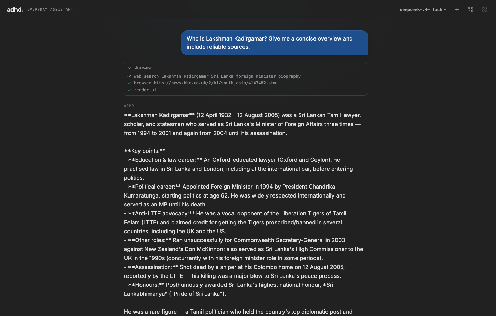
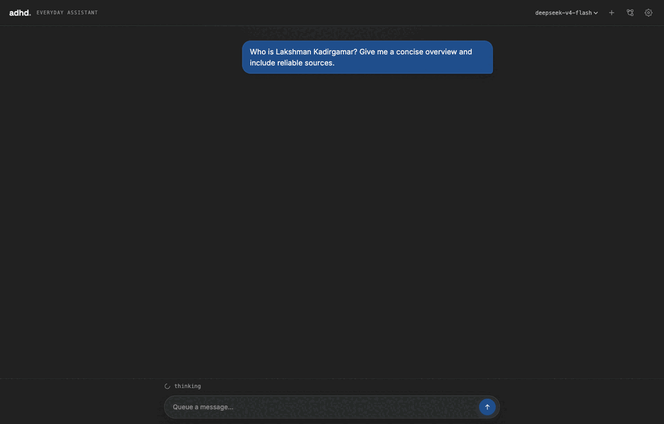
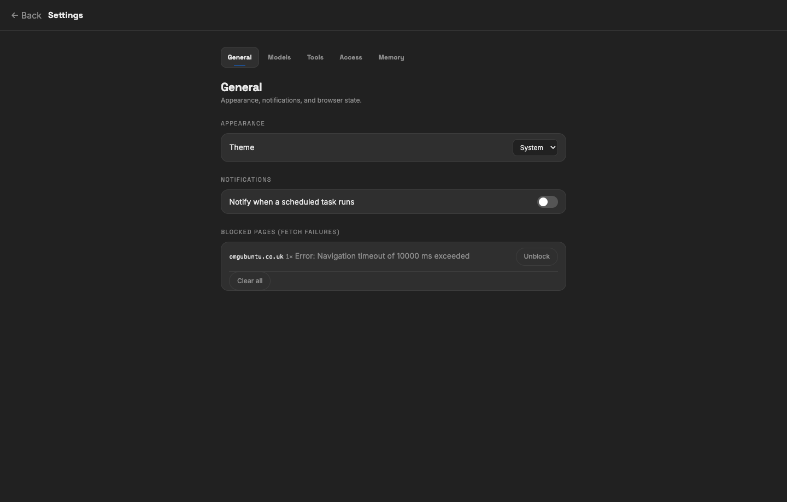

01 / CHAT
Ask. Watch it work.
Streams the answer and a collapsible trace of every search, browser visit, file operation, and command.

Local-first · built with the DeepSeek API
adhd is a personal AI assistant that can actually do the work—browse, write files, run commands, remember context, and automate repeat tasks. One local process. No database. No cloud middleman.

01 / The idea
Most assistants stop at an answer. adhd keeps going—with tools, memory, scheduled work, and visual workflows that turn intent into outcomes.
01 / CHAT
Streams the answer and a collapsible trace of every search, browser visit, file operation, and command.

02 / HOME
A focused chat interface with model switching, light and dark themes, and a visible context meter.

03 / FLOWS
Wire reusable workflows on a visual canvas. Branch, merge, schedule, or launch them straight from chat.

04 / CONTROL
Switch model providers, choose tool permissions, manage memory, and control exactly which local roots are visible.

02 / Built with boundaries
01Permission modesChoose what needs approval before it changes your machine.
02Explicit file rootsOnly share the folders you decide the assistant can access.
03Your model keyCredentials stay local and go only to the provider you choose.
Open source · ready to run